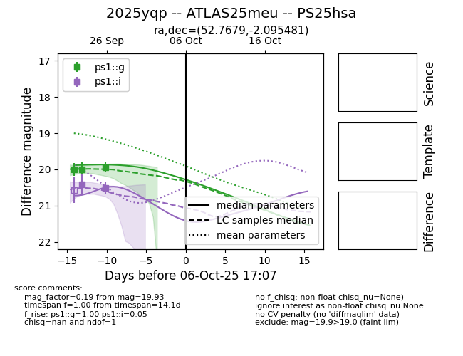
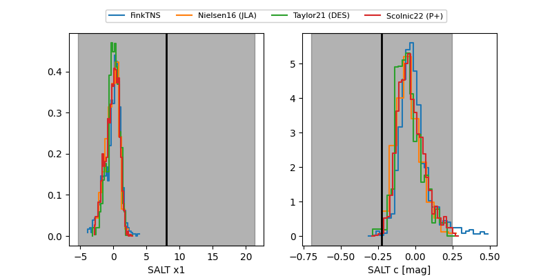

TNS: 2025yqp
YSE: 2025yqp
2025yqp (yse,tns)
ATLAS25meu (atlas)
PS25hsa (panstarrs)
equatorial (ra, dec) = (52.7679,-2.09548)
galactic (l, b) = (186.6227,-44.33887)


last ps1::g=19.93, ps1::i=20.52
3 ps1::g, 2 ps1::i detections